File list
This special page shows all uploaded files.
{kind=link}
{kind=link}
| Date | Name | Thumbnail | Size | User | Description | Versions |
|---|---|---|---|---|---|---|
| 18:04, 20 November 2022 | Skill set 2.png (file) | 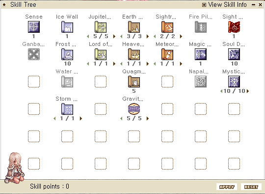 | 30 KB | Miyu | 1 | |
| 18:04, 20 November 2022 | Skill set 1.png (file) | 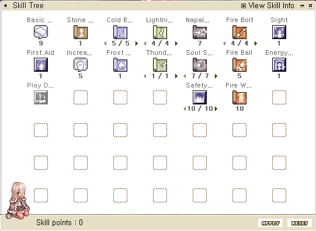 | 27 KB | Miyu | 1 | |
| 23:31, 17 November 2022 | OB3.gif (file) |  |
1.99 MB | G00suede | 1 | |
| 23:28, 17 November 2022 | OB (2).gif (file) | .gif) |
1.97 MB | G00suede | 1 | |
| 20:35, 4 November 2022 | Rangers.jpg (file) | 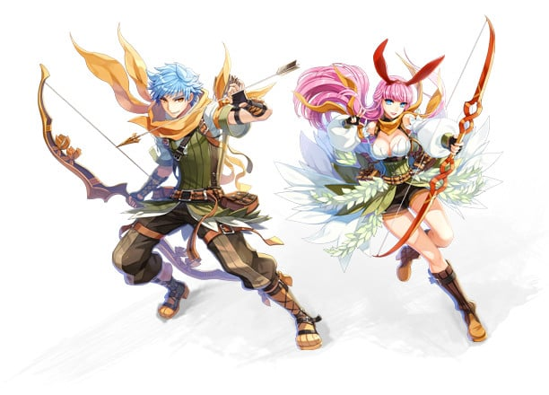 | 80 KB | Hurt Locker | 1 | |
| 09:36, 2 November 2022 | Nova Ext Timers for Warlock.png (file) |  |
33 KB | Miyu | Nova Ext Timer skill id for warlocks | 1 |
| 09:34, 2 November 2022 | Timer Command.png (file) |  |
42 KB | Miyu | Visuals for /timer in a warlock player pov | 1 |
| 20:00, 29 October 2022 | Wild Pome.jpg (file) | 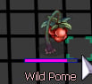 | 21 KB | Osa700 | 1 | |
| 19:54, 29 October 2022 | Wild Rose.jpg (file) | 21 KB | Osa700 | 1 | ||
| 19:52, 29 October 2022 | Pome Stalk.jpg (file) | 15 KB | Osa700 | 1 | ||
| 08:20, 28 October 2022 | Miyu Warlock Skill Tree.jpg (file) | 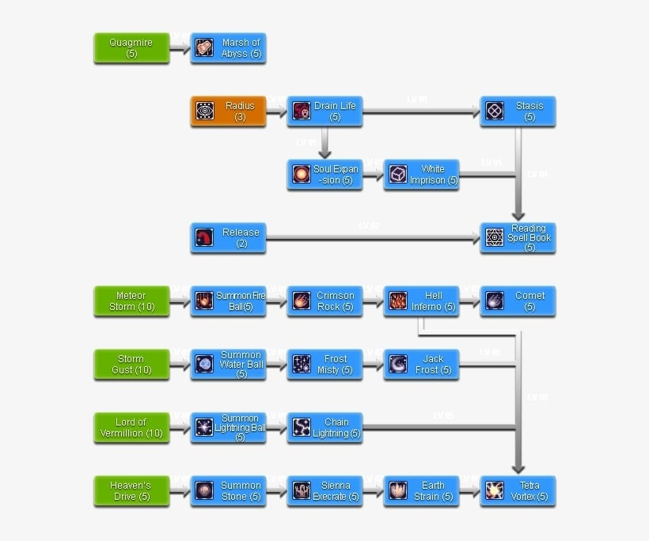 | 53 KB | Miyu | Warlock skill tree | 1 |
| 07:31, 28 October 2022 | Miyu new behavior reading.gif (file) |  |
1.56 MB | Miyu | Visuals of what new Reading Spell book looked like. | 1 |
| 07:30, 28 October 2022 | Miyu Old Behavior reading.jpg (file) |  |
73 KB | Miyu | Visuals of what old Reading Spell book looked like. | 1 |
| 21:27, 26 October 2022 | Angnar.png (file) | 47 KB | Osa700 | 1 | ||
| 12:38, 23 October 2022 | Mh100023.png (file) | 2 KB | Osa700 | 1 | ||
| 14:03, 21 October 2022 | SavageCoastBiomes.png (file) |  |
113 KB | Osa700 | 2 | |
| 20:05, 19 October 2022 | Zaedronath Firestorm.gif (file) |  |
1.86 MB | HairyWizard | 1 | |
| 14:38, 19 October 2022 | Gypsy.jpg (file) | 23 KB | Osa700 | 1 | ||
| 14:18, 19 October 2022 | Mist (Edda Hats).png (file) | 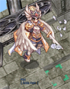 | 52 KB | Osa700 | 3 | |
| 13:55, 19 October 2022 | High Priest.jpg (file) |  |
24 KB | Osa700 | 1 | |
| 13:55, 19 October 2022 | Champion.jpg (file) | 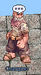 | 23 KB | Osa700 | 1 | |
| 13:55, 19 October 2022 | Stalker.jpg (file) | 23 KB | Osa700 | 1 | ||
| 13:54, 19 October 2022 | Assassin Cross.jpg (file) |  |
22 KB | Osa700 | 1 | |
| 12:11, 19 October 2022 | Sniper.jpg (file) | 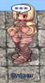 | 23 KB | Osa700 | 1 | |
| 12:10, 19 October 2022 | Biochemist1.jpg (file) | 24 KB | Osa700 | 1 | ||
| 11:11, 19 October 2022 | High Wizard.jpg (file) |  |
23 KB | Osa700 | 1 | |
| 11:10, 19 October 2022 | Scholar.jpg (file) |  |
23 KB | Osa700 | 1 | |
| 11:10, 19 October 2022 | MasterSmith.jpg (file) | 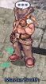 | 22 KB | Osa700 | 1 | |
| 09:47, 19 October 2022 | Paladin.jpg (file) | 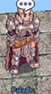 | 24 KB | Osa700 | 1 | |
| 07:55, 19 October 2022 | Lord Knight.jpg (file) |  |
25 KB | Osa700 | 2 | |
| 07:18, 19 October 2022 | Dragon Jump.gif (file) |  |
1.95 MB | Osa700 | 1 | |
| 05:55, 19 October 2022 | Zaedronath Tornado.gif (file) | 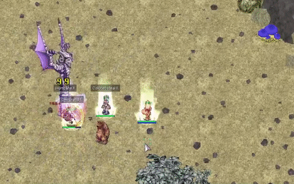 | 1.62 MB | HairyWizard | 1 | |
| 05:30, 19 October 2022 | Zaedronath.png (file) |  |
92 KB | HairyWizard | 1 | |
| 23:04, 29 August 2022 | 28 Gernoz.png (file) |  |
828 KB | Hurt Locker | 1 | |
| 16:21, 19 August 2022 | Celine Spreadsheet 1.PNG (file) |  |
345 KB | HairyWizard | 6 | |
| 04:25, 19 August 2022 | ROGSlim.gif (file) |  |
5.73 MB | G00suede | 1 | |
| 03:48, 13 July 2022 | Welding Enchants HW.PNG (file) | 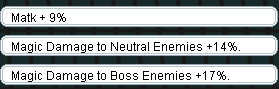 | 3 KB | HairyWizard | 1 | |
| 01:20, 6 July 2022 | CaratPet.png (file) | 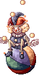 | 3 KB | Randomced859 | 1 | |
| 01:19, 6 July 2022 | BeetleKingPet.png (file) | 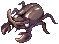 | 1 KB | Randomced859 | 1 | |
| 01:18, 6 July 2022 | CornutusPet.png (file) | 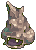 | 930 bytes | Randomced859 | 1 | |
| 01:17, 6 July 2022 | ThePaperPet.png (file) |  |
1 KB | Randomced859 | 1 | |
| 01:15, 6 July 2022 | BoiledRicePet.png (file) |  |
1 KB | Randomced859 | 1 | |
| 00:52, 4 July 2022 | Devo IC.gif (file) |  |
5.39 MB | G00suede | 1 | |
| 00:57, 29 June 2022 | Blank Damage Boss 1.png (file) | 50 KB | HairyWizard | 1 | ||
| 00:56, 29 June 2022 | Blank Damage Boss 2.png (file) | 28 KB | HairyWizard | 1 | ||
| 00:55, 29 June 2022 | Blank Damage Normal 2.png (file) | 27 KB | HairyWizard | 1 | ||
| 00:55, 29 June 2022 | Blank Damage Normal 1.png (file) | 85 KB | HairyWizard | 1 | ||
| 00:54, 29 June 2022 | Blank Gear 1.png (file) | 238 KB | HairyWizard | 1 | ||
| 00:54, 29 June 2022 | Blank Stats 1.png (file) | 9 KB | HairyWizard | 1 | ||
| 18:54, 28 June 2022 | Monkeyplayer.jpg (file) |  |
987 KB | Kancell | 1 |
{kind=link}
{kind=link}
{kind=link}
{kind=link}
{kind=link}
{kind=link}
{kind=link}
{kind=link}
{kind=link}
.png){kind=link}
{kind=link}
{kind=link}
{kind=link}
{kind=link}
{kind=link}
{kind=link}
{kind=link}
{kind=link}
{kind=link}
{kind=link}
{kind=link}
{kind=link}
{kind=link}